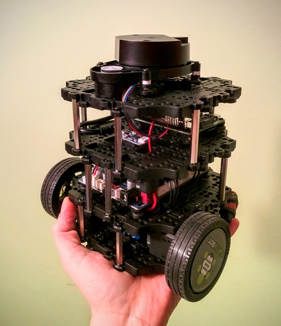

Turtlebot3
Este año los Reyes Magos se han puesto espléndidos y me han traído un Turtlebot3, el modelo Burger para ser más exactos. Bueno, en realidad no han sido los Reyes, sino que me lo he auto-regalado.

Aunque también sirve para pasar un buen rato jugando con él, en realidad es una plataforma de desarrollo de robótica, ya que es un robot modular y totalmente personalizable. Es un robot de dos ruedas y una bola que actúa como rueda castor o giratoria. Se organiza en 4 niveles mediante plataformas:
- Nivel 1: aloja los motores y la batería.
- Nivel 2: en él se encuentra la placa OpenCR, basada en Arduino, y que incluye el hardware necesario para implementar el Turtlebot3: sensores, drivers para motores, interfaces de comunicaciones, etc.
- Nivel 3: en él se coloca la Raspberry Pi 3 en la que se ejecuta ROS, el sistema operativo del robot. También tiene espacio suficiente para añadir más sensores o componentes.
- Nivel 4: es el nivel superior y sobre el que se coloca el LIDAR, que se emplea para medir distancias y que a grandes rasgos es similar al RADAR pero usando la luz de un láser.
Como cada nivel es idéntico a los demás, se pueden añadir más niveles si se necesitan.
El proyecto es código abierto, u open source, tanto el hardware como el software, por lo que es posible modificarlo, adaptarlo y configurarlo a medida. Todas las partes que forman los niveles, los mecanismos de sujeción, etc. se pueden imprimir en una impresora 3D usando los diseños que están disponibles en la web.
De momento estoy haciendo pruebas, ya que el Turtlebot3 se desarrolló para la versión de ROS Kinetic Kame, que a su vez es compatible con Ubuntu 16.04, mientras que yo tengo instalado Ubuntu 18.04, para la que Kinetic no es compatible; sí lo es la última versión disponible de ROS, Melodic Morenia, a la que se está portando el código de Turtlebot3.
Hasta ahora he conseguido que funcionen sin demasiados problemas los modos básicos de teleoperación del robot, mediante teclado y joystick, y las funciones básicas de SLAM y cartografiado, así como la navegación autónoma básica usando el mapa creado.